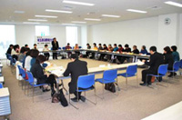

| 1． |
第46回埼玉県消費者大会の趣旨、実行委員会の運営体制等について説明後、加藤実行委員長より、｢積極的に発言頂き、盛会に開催されるようご協力を宜しくお願いします｣とのあいさつがありました。 |

|
| （1） |
運営体制 |
実行委員長
新日本婦人の会埼玉県本部会長 |
副実行委員長
埼玉県母親大会連絡会事務局長 |
事務局長
埼玉県消費者団体連絡会代表幹事 |
事務局次長・事務局
埼玉県消費者団体連絡会 |
|
| （２） |
日程と会場 |
| 10月14日（木）埼玉会館大・小ホール・会議室 |
|
| ２． |
各団体参加者の自己紹介をしました。 |
| ３． |
第45回埼玉県消費者大会の決算報告を行い、確認されました。 |
| ４． |
第46回埼玉県消費者大会分担金(案)を提案し、確認されました。 |
| ５． |
記念講演について |
| 講師を澤地久枝さんにお願いすることにし、講演内容やタイトルについて意見交換をしました。 |
| ６． |
プレ学習会について |
| 第1回(7/13)は相沢幸悦氏を講師に、くらしと経済についての学習をすることを確認しました。第２回(8/26)は、教育・子育てをテーマに講師について意見交換しました。 |
| ７． |
分科会について |
| ｢食｣｢医療･社会保障｣｢消費者問題｣｢環境｣の４つのテーマを確認し、そのほかは次回決定していくことにしました。 |
| ８． |
｢市町村における消費生活関連事業調査｣の実施について |
| 今大会も消費者被害をなくす会と消費者大会実行委員会の共催で行うことが確認されました。 |